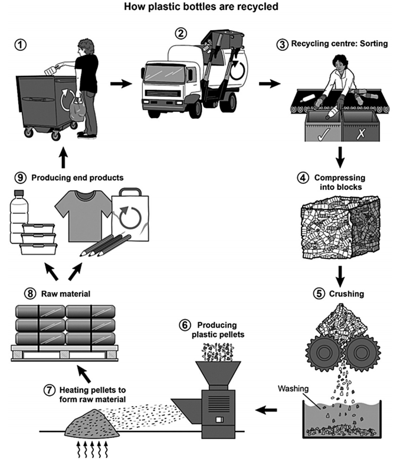

Task 1 — Plastic bottle recycling process
The diagram below shows the process for recycling plastic bottles. Summarise the information by selecting and reporting the main features, and make comparisons where relevant.

The diagram illustrates how plastic bottles are recycled, from the moment they are discarded by consumers to their transformation into new products.
Overall, the process consists of ten stages and forms a closed loop: the bottles are collected, cleaned and processed into raw material, and the finished items eventually return to the starting point to be recycled again.
The cycle begins when people drop bottles into a wheeled recycling bin, from which they are collected by a truck and taken to a recycling centre. There, the bottles are sorted on a conveyor belt into acceptable and unacceptable items. The selected bottles are then compressed into blocks, crushed by rollers into small pieces, and washed in a cleaning tank.
Next, the washed fragments are melted to produce plastic pellets, which are heated to form the raw material used in manufacturing. Finally, this material is turned into end products such as new bottles, T-shirts, carrier bags and pens. Notably, the process is circular rather than linear, as these products will themselves be thrown away and enter the recycling loop again.
TA / TR：完整覆盖 10 个环节（回收箱 → 卡车 → 回收中心分拣 → 压缩成块 → 粉碎 → 清洗 → 塑料颗粒 → 加热成原材料 → 终端产品 → 回到起点），闭环特征在 Overview 与结尾段双重点到；无杜撰步骤，全部阶段与箭头方向来自原图。
CC / LR / GRA：四段式（Introduction → Overview → 前半流程 → 后半流程），衔接词 Initially 隐含的时序推进 + There / Next / Finally / Notably 串联；LR 使用 compress / crush / wash / melt / pellets / raw material 等流程动词与名词；GRA 被动语态（are sorted / are compressed / is turned into）贯穿，简单句与复合句交替，长句控制在 30 词以内。
closed loop— 闭环recycling bin— 回收箱sorting— 分拣compress into blocks— 压缩成块crushing— 粉碎plastic pellets— 塑料颗粒raw material— 原材料end products— 终端产品